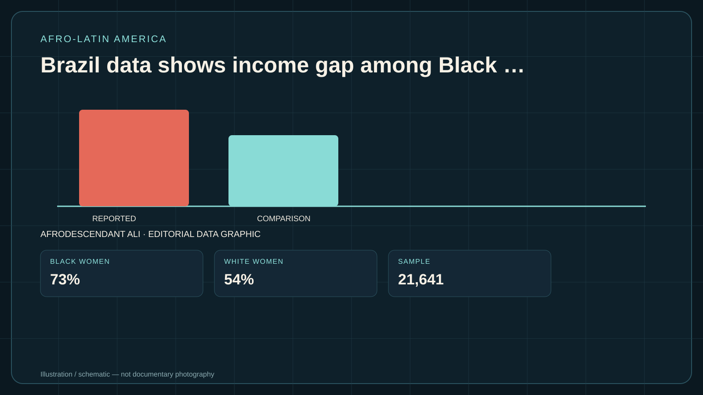

Brazil data shows income gap among Black women reporting violence
A data update reported by Agência Brasil says 73% of Black women who reported domestic or family violence lived in households earning up to two minimum wages, compared with 54% of white women.

What We Know
Agência Brasil reported that 73% of Black women who reported domestic or family violence lived in households earning up to two minimum wages, compared with 54% of white women.
The source and sample
The report describes an updated data map drawing on interviews with 21,641 women, including 13,794 Black or mixed-race women, conducted from 16 May to 8 July 2025. The figures are presented as a distribution of reported cases and household income.
Why It Matters
Income is part of the context in which survivors seek safety and services. The comparison does not, by itself, establish that household income causes violence or explain every difference in reporting.
What We’re Watching
The underlying map and methodology, public-service responses, access to protection and whether later data shows changes in reporting, income and support.